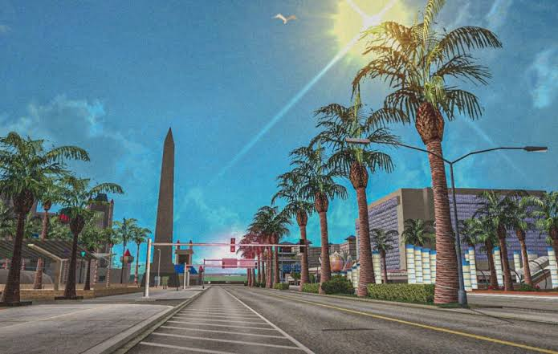

Las emblemáticas ciudades de San Andreas
¡Bienvenidos a todos!
Les damos paso a esta sencilla faceta informativa sobre las 3 fantásticas
ciudades de San Andreas.
¿Qué veremos por aquí?
Presentamos una vista previa de las bellezas únicas que da cada ciudad junto
a datos informativos sobre su cantidad de población, economía, transportes autorizados, etc...
además de otorgarles ciertas recomendaciones para la mejor experiencia posible!
Los Santos
| Variable |
Datos |
| Población: |
3.000.000 habitantes. |
| Presupuesto: |
$12.500.000.000 USD |
| Transportes: |
Avión, Tren y Taxis Oficiales. |
| Datos actualizados. Fuente:"San Andreas Life." |
Consejos viables:
- En lo posible evite vestir prendas de color Morado o Verde.
- Si presencia una persecución policial, refúgiese en el "Burger Shot" más cercano.
San Fierro

| Variable |
Datos |
| Población: |
800.000 habitantes |
| Presupuesto: |
$8.200.000.000 USD |
| Transportes: |
Tranvía, Tren y Aeropuerto Easter Bay. |
| Datos actualizados. Fuente:"San Andreas Life." |
Consejos viables:
- Discreción al pasar por el distrito financiero, evite contacto visual con individuos en traje de vestir.
- Atención al cruzar las calles.
Las Venturas

| Variable |
Datos |
| Población: |
500.000 habitantes. |
| Presupuesto: |
$18.900.000.000 USD |
| Transportes: |
Taxis, Autopistas y Aeropuerto LV |
| Datos actualizados. Fuente:"San Andreas Life." |
Consejos viables:
- Ciudad concentrada en casinos, recuerde: LA CASA SIEMPRE GANA.
- Al extremo de la zona norte de la ciudad se encuentra una base militar,
el acceso está LETALMENTE PROHIBIDO.